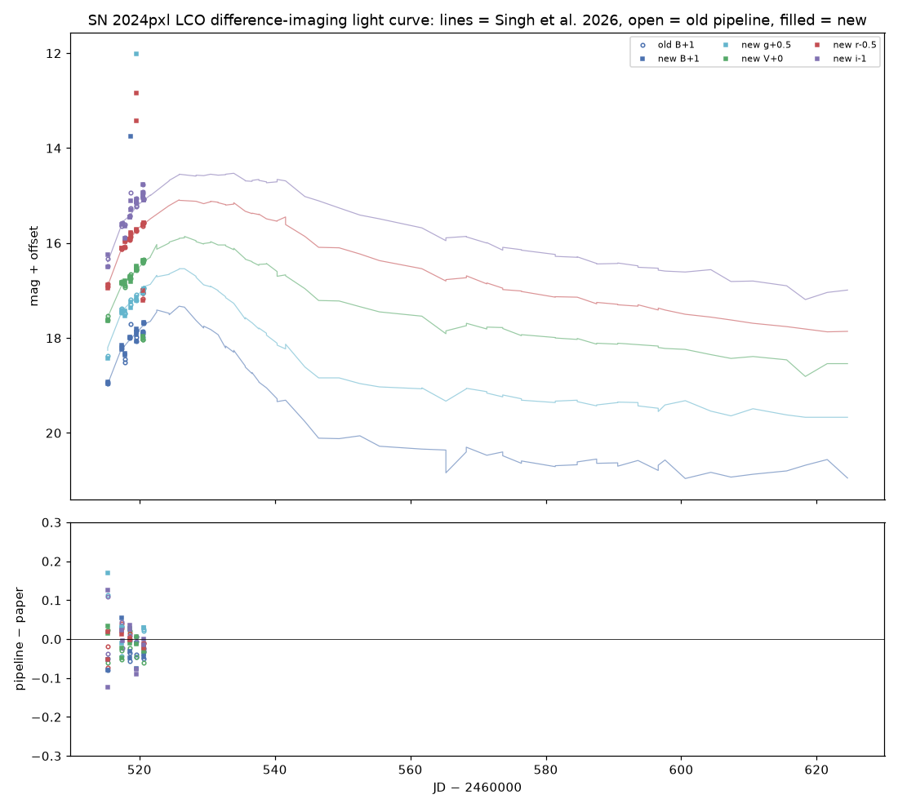
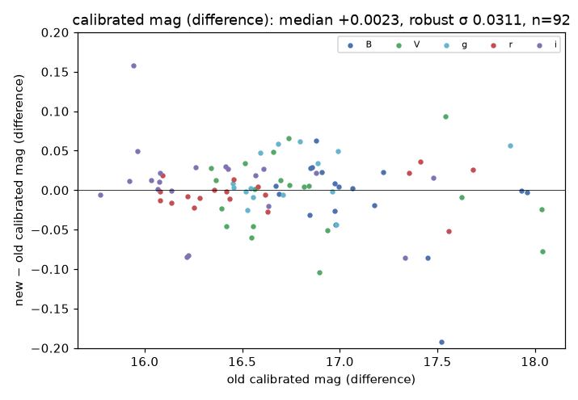
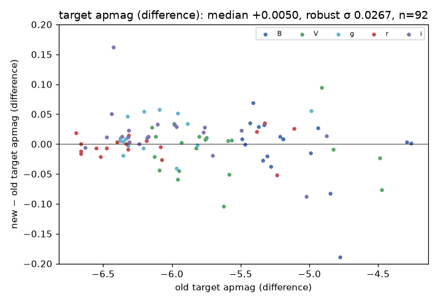
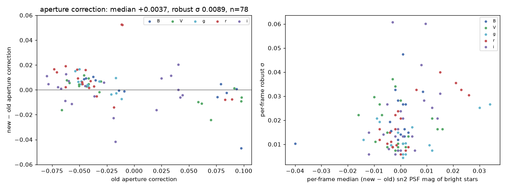
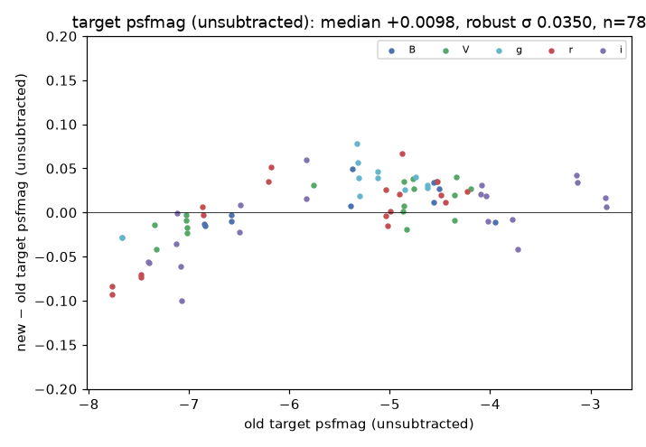
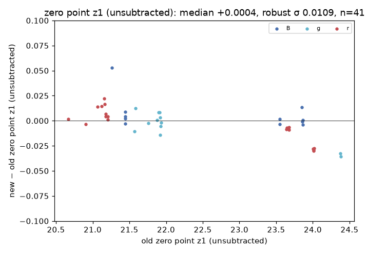
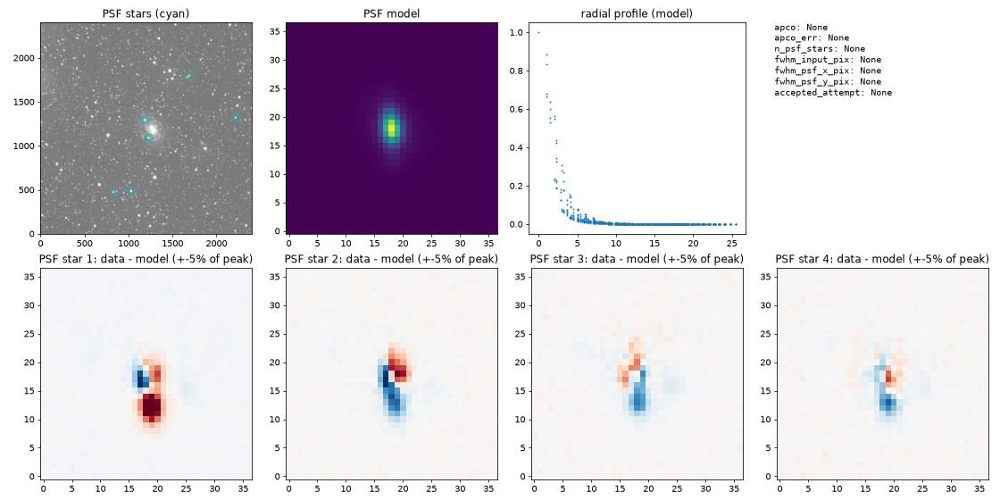

snpipe: an IRAF-free lcogtsnpipe, checked against the original on SN 2024pxl
Pure-Python rewrite of the LCOGT supernova pipeline for agent-run reductions. Every stage was run with both pipelines on the same LCO frames (99 frames of 2024-07-22…28) and compared number by number; the light curve is compared with Singh et al. (2026). Code: github.com/yizedong/lcogtsnpipe-ai · details: report/README.md · differences from the old code: decisions.md · agents: agents.md
Stage by stage
| stage | old | new | new − old (median ± robust σ) | speed |
|---|---|---|---|---|
| ingest + funpack | LCOGTingest + cfitsio funpack | astropy unpacking, threaded download | pixels identical in all extensions | I/O bound |
| catalogs | comparecatalogs (vizquery, astroquery) | same queries, cuts, file formats | identical files | — |
| cosmic | astroscrappy | identical call | bit-identical masks and clean images (18/18) | same algorithm |
| wcs | trust BANZAI; human checkwcs | measured vs Gaia for every frame, refit if bad | new check | ≈1 s/frame |
| psf — aperture photometry | daophot phot | photutils + IRAF centroid and sky rules | identical (0.000 median and MAD) | |
| psf — model, PSF photometry | daophot psf (gauss+LUT), group, nstar | GaussianPRF + 2× LUT (DAOPHOT recipe) in ImagePSF; DAOPHOT grouping; PSFPhotometry with fitted sky | aperture correction +0.004 ± 0.009 (n=78); sn2 PSF mags -0.001, per-frame σ 0.015 | 39–80 s → ≈15 s per frame; parallel |
| psfmag | lscsn + daophot allstar | Legendre background, IRAF mode sky, PSFPhotometry | SN psfmag +0.010 ± 0.035 (n=78) | 20 → 4.3 s/frame |
| zcat | Python | ported line by line | z1 +0.000 ± 0.011 (n=41) | |
| mag (unsubtracted) | calibratemag | ported | +0.014 ± 0.033 (n=78) | |
| diff (PyZOGY) | geomap + gregister, seepsf, PyZOGY | flux-conserving reproject, seepsf-equivalent, PyZOGY with exact 60× faster bad-pixel fill | SN aperture mag +0.005 ± 0.027 (n=92) | 181 → 102 s/frame; 2 parallel |
| zcat / mag on differences | Python | ported | z1 -0.003 ± 0.003 (n=52); calibrated mag +0.002 ± 0.031 (n=92) |
Frames reduced by only one pipeline: none only-old; 19 only-new in the unsubtracted PSF stage (old PSF failed; recovered by the remediation ladder).
Light curve vs Singh et al. (2026)
| band | old − paper | new − paper |
|---|---|---|
| B | -0.045 ± 0.013 (n=9) | -0.045 ± 0.020 (n=9) |
| g | +0.026 ± 0.011 (n=5) | +0.029 ± 0.031 (n=6) |
| V | -0.031 ± 0.037 (n=10) | -0.011 ± 0.029 (n=10) |
| r | -0.005 ± 0.024 (n=8) | -0.007 ± 0.032 (n=10) |
| i | -0.005 ± 0.026 (n=10) | -0.002 ± 0.049 (n=10) |






How agents check a reduction
The old pipeline needed a human at checkwcs, checkpsf, zcat -i, checkmag, checkdiff and getmag --show; unattended, it accepts everything.
snpipe gives each stage (1) gates with per-frame QA files and exit codes, (2) the manual's remediation ladder for failed PSFs, (3) review packets and logged verdicts, and (4) an ASTRA record whose decisions expose the old defaults.



Limitations and next steps
- Constant PSF over the frame (as DAOPHOT varorder 0): 6 PSF stars leave 0.02–0.04 mag bias / 0.07–0.10 mag scatter on 1 m frames in both pipelines.
- WCS-based registration leaves ~0.6 px offsets between the 2018 templates and 2024 frames; a star-based refinement (as IRAF geomap) is the next step for
diff. - PyZOGY's iterative flux-scale fit is sensitive to the star set (cutouts moved SN mags by up to 0.2 mag); a zero-point-based option is being tested.
- PSF stars are not checked against the BANZAI bad-pixel mask (neither pipeline).